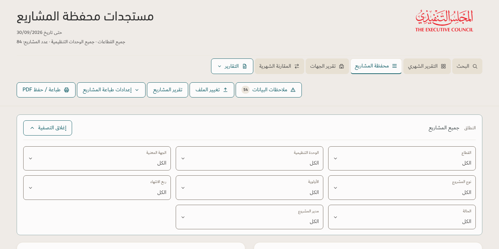
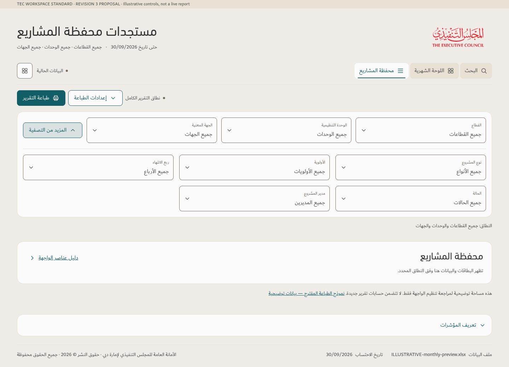

Expanded filters — before / after
The same three core fields stay visible. Additional filters expand below them without duplicating the core fields.
Before — current v129

After — Revision 3 proposal

The same three core fields stay visible. Additional filters expand below them without duplicating the core fields.
Before — current v129

After — Revision 3 proposal
